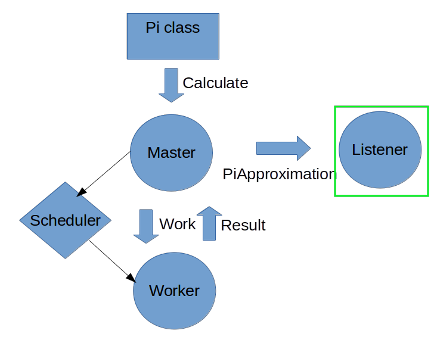

Actor model
and other modern approaches for building concurrent systems
Created by Andrew Preizner
- Actor model
- Akka
- Gpars
- Conclusions
Classical approach for building concurrent systems in Java
Common model of Concurrent computing

Shared resource
Main problems
- Hard to design systems which requires a frequent data exchange between threads
- Hard to debug
- Unclear structure
- Implicit errors (deadlock)
Actor model
1973, Carl Hewitt, Henry Baker, Irene Greif, William Clinger etc.


Example

Common schema
Actor


Akka is an open-source toolkit and runtime simplifying the construction of concurrent and distributed applications on the JVM.
- Creating actor
- Message exchanging
- Threads scheduling (green threads)
Example: calculate the value of Pi
Let's do it with actors
Formula:
Application structure diagram:
Work Message:
Work:
static class Work {
private final int start;
private final int nrOfElements;
public Work(int start, int nrOfElements) {
this.start = start;
this.nrOfElements = nrOfElements;
}
public int getStart() {
return start;
}
public int getNrOfElements() {
return nrOfElements;
}
}
Result Message:
Result:
static class Result {
private final double value;
public Result(double value) {
this.value = value;
}
public double getValue() {
return value;
}
}
PiApproximation Message:
PiApproximation:
static class PiApproximation {
private final double pi;
private final Duration duration;
public PiApproximation(double pi, Duration duration) {
this.pi = pi;
this.duration = duration;
}
public double getPi() {
return pi;
}
public Duration getDuration() {
return duration;
}
}
Worker Actor:
Worker actor:
public static class Worker extends UntypedActor {
private double calculatePiFor(int start, int nrOfElements) {
double acc = 0.0;
for (int i = start * nrOfElements; i <= ((start + 1) * nrOfElements - 1); i++) {
acc += 4.0 * (1 - (i % 2) * 2) / (2 * i + 1);
}
return acc;
}
public void onReceive(Object message) {
if (message instanceof Work) {
Work work = (Work) message;
double result = calculatePiFor(work.getStart(), work.getNrOfElements());
getSender().tell(new Result(result), getSelf());
} else {
unhandled(message);
}
}
}
Master Actor:
Master actor (Constructor):
public static class Master extends UntypedActor {
private final int nrOfMessages;
private final int nrOfElements;
private double pi;
private int nrOfResults;
private final long start = System.currentTimeMillis();
private final ActorRef listener;
private final ActorRef workerRouter;
public Master(final int nrOfWorkers, int nrOfMessages, int nrOfElements,
ActorRef listener) {
this.nrOfMessages = nrOfMessages;
this.nrOfElements = nrOfElements;
this.listener = listener;
workerRouter = this.getContext().actorOf(new Props(Worker.class).withRouter(
new RoundRobinRouter(nrOfWorkers)), "workerRouter");
}
Master actor (onReceive):
public void onReceive(Object message) {
if (message instanceof Calculate) {
for (int start = 0; start < nrOfMessages; start++) {
workerRouter.tell(new Work(start, nrOfElements), getSelf());
}
} else if (message instanceof Result) {
Result result = (Result) message;
pi += result.getValue();
nrOfResults += 1;
if (nrOfResults == nrOfMessages) {
// Send the result to the listener
Duration duration = Duration.create(System.currentTimeMillis() - start,
TimeUnit.MILLISECONDS);
listener.tell(new PiApproximation(pi, duration), getSelf());
// Stops this actor and all its supervised children
getContext().stop(getSelf());
}
} else {
unhandled(message);
}
}
Listener Actor:

Listener actor:
public static class Listener extends UntypedActor {
public void onReceive(Object message) {
if (message instanceof PiApproximation) {
PiApproximation approximation = (PiApproximation) message;
System.out.println(
String.format("\n\tPi approximation: \t\t%s\n\tCalculation time: \t%s",
approximation.getPi(), approximation.getDuration()));
getContext().system().shutdown();
} else {
unhandled(message);
}
}
}
Pi classs:
public static void main(String[] args) {
Pi pi = new Pi();
pi.calculate(4, 10000, 10000);
}
// actors and messages ...
public void calculate(final int nrOfWorkers, final int nrOfElements,
final int nrOfMessages) {
// Create an Akka system
ActorSystem system = ActorSystem.create("PiSystem");
// create the result listener, which will print the result and shutdown the system
final ActorRef listener = system.actorOf(new Props(Master.Listener.class),
"listener");
// create the master
ActorRef master = system.actorOf(new Props(new UntypedActorFactory() {
public UntypedActor create() {
return new Master(nrOfWorkers, nrOfMessages, nrOfElements, listener);
}
}), "master");
// start the calculation
master.tell(new Calculate());
}


The concepts available in GPars can be categorized into three groups:
- Code-level helpers Constructs that can be applied to small parts of the code-base such as individual algorithms or data structures without any major changes in the overall project architecture:
- Architecture-level concepts Constructs that need to be taken into account when designing the project structure
- Shared Mutable State Protection
Parallel collection
JSR-166y

Fork/Join Framework
Fork/Join Framework
The fork/join framework is an implementation of the ExecutorService interface that helps you take advantage of multiple processors. It is designed for work that can be broken into smaller pieces recursively. The goal is to use all the available processing power to enhance the performance of your application.
Data Parallelism
//multiply numbers
GParsPool.withPool {
final List result = [1, 2, 3, 4, 5].collectParallel {it * 2}
assert ([2, 4, 6, 8, 10].equals(result))
}
GParsPool
GParsExecutorsPool
The following methods are currently supported on all objects in Groovy:
- eachParallel()
- eachWithIndexParallel()
- collectParallel()
- collectManyParallel()
- findAllParallel()
- findAnyParallel()
- findParallel()
- everyParallel()
- anyParallel()
- groupByParallel()
- minParallel()
- maxParallel()
- sumParallel()
- countParallel()
Map / Reduce
- map()
- reduce()
- filter()
- size()
- sum()
- min()
- max()
- sort()
- groupBy()
- combine()
def myNumbers = (1..1000).parallel.filter { it % 2 == 0 }.map {
Math.sqrt it }.collection
Asynchronous Functions
- async() - Creates an asynchronous variant of the supplied closure, which when invoked returns a future for the potential return value
- callAsync() - Calls a closure in a separate thread supplying the given arguments, returning a future for the potential return value,
Asynchronous functions example
Closure download = {String url ->
url.toURL().text
}.asyncFun()
Closure loadFile = {String fileName ->
… //load the file here
}.asyncFun()
Closure hash = {s -> s.hashCode()}.asyncFun()
Closure compare = {int first, int second ->
first == second
}.asyncFun()
def result = compare(hash(download('http://www.gpars.org')),
hash(loadFile('/coolStuff/gpars/website/index.html')))
println 'Allowed to do something else now'
println "The result of comparison: " + result.get()
Dataflow
Dataflow concurrency offers an alternative concurrency model
import static groovyx.gpars.dataflow.Dataflow.task
final def x = new DataflowVariable()
final def y = new DataflowVariable()
final def z = new DataflowVariable()
task {
z << x.val + y.val
}
task {
x << 10
}
task {
y << 5
}
println "Result: ${z.val}"
The three tasks in the example do not necessarily need to be mapped to three physical threads.
Publish-subscriber communication example:
DataflowWriteChannel broadcastStream = new DataflowBroadcast()
DataflowReadChannel stream1 = broadcastStream.createReadChannel()
DataflowReadChannel stream2 = broadcastStream.createReadChannel()
broadcastStream << 'Message1'
broadcastStream << 'Message2'
broadcastStream << 'Message3'
assert stream1.val == stream2.val
assert stream1.val == stream2.val
assert stream1.val == stream2.val
DataflowQueues and DataflowBroadcast Concepts. You may think of them as thread-safe buffers or queues for message transfer among concurrent tasks or threads.
Dataflow approach benefits
- No race-conditions
- No deadlocks
- Completely deterministic programs
- BEAUTIFUL code.
Gpars Actors
Actor example
class Player extends DefaultActor {
String name
Actor server
int myNum
void act() {
loop {
myNum = new Random().nextInt(10)
server.send myNum
react {
switch (it) {
case 'too large': println "$name: $myNum was too large"; break
case 'too small': println "$name: $myNum was too small"; break
case 'you win': println "$name: I won $myNum"; terminate(); break
}
}
}
}
}
Groovy magic
Sending message:
def passiveActor = Actors.actor{
loop {
react { msg -> println "Received: $msg"; }
}
}
passiveActor.send 'Message 1'
passiveActor << 'Message 2' //using the << operator
passiveActor 'Message 3' //using the implicit call() method
}
Send And Wait
def replyingActor = Actors.actor{
loop {
react { msg ->
println "Received: $msg";
reply "I've got $msg"
}
}
}
def reply1 = replyingActor.sendAndWait('Message 4')
def reply2 = replyingActor.sendAndWait('Message 5', 10, TimeUnit.SECONDS)
Groovy Magic
Send and continue
friend.sendAndContinue 'I need money!', {money -> pocket money}
println 'I can continue while my friend is collecting money for me'
Send and promise
Promise loan = friend.sendAndPromise 'I need money!'
println 'I can continue while my friend is collecting money for me'
loan.whenBound {money -> pocket money} //asynchronous waiting for a reply
println "Received ${loan.get()}" //synchronous waiting for a reply
Receiving messages
println 'Waiting for a gift'
react {gift ->
if (myWife.likes gift) reply 'Thank you!'
}
Groovy Magic
Undelivered messages
final DefaultActor me
me = Actors.actor {
def message = 1
message.metaClass.onDeliveryError = {->
//send message back to the caller
me << "Could not deliver $delegate"
}
def actor = Actors.actor {
react {
//wait 2sec in order next call in demo can be emitted
Thread.sleep(2000)
//stop actor after first message
stop()
}
}
actor << message
actor << message
react {
//print whatever comes back
println it
}
}
me.join()
Groovy magic
- afterStart() - called right after the actor has been started.
- afterStop(List undeliveredMessages) - called right after the actor is stopped, passing in all the unprocessed messages from the queue.
- onInterrupt(InterruptedException e) - called when the actor's thread gets interrupted. Thread interruption will result in the stopping the actor in any case.
- onTimeout() - called when no messages are sent to the actor within the timeout specified for the currently blocking react method.
- onException(Throwable e) - called when an exception occurs in the actor's event handler. Actor will stop after return from this method.
Groovy magic
class MyActor extends DefaultActor {
public void afterStart() {
…
}
public void onTimeout() {
…
}
protected void act() {
…
}
}
Stateless Actors
final class MyActor extends DynamicDispatchActor {
void onMessage(String message) {
println 'Received string'
}
void onMessage(Integer message) {
println 'Received integer'
reply 'Thanks!'
}
void onMessage(Object message) {
println 'Received object'
sender.send 'Thanks!'
}
void onMessage(List message) {
println 'Received list'
stop()
}
}
final def myActor = new MyActor().start()
Actors.actor {
myActor 1
myActor ''
myActor 1.0
myActor(new ArrayList())
}.join()
Add message handlers dynamically
final Actor myActor = new DynamicDispatchActor().become {
when {String msg -> println 'A String'; reply 'Thanks'}
when {Double msg -> println 'A Double'; reply 'Thanks'}
when {msg -> println 'A something ...'; reply 'What was that?';stop()}
}
myActor.start()
Actors.actor {
myActor 'Hello'
myActor 1.0d
myActor 10 as BigDecimal
myActor.join()
}.join()
Static Dispatch actor
final class MyActor extends StaticDispatchActor < String > {
void onMessage(String message) {
println 'Received string ' + message
switch (message) {
case 'hello':
reply 'Hi!'
break
case 'stop':
stop()
}
}
}

- Dependency: compile ":akka:2.2.4.1"
- Dependency: compile ":gpars:0.3"